1head-project คืออะไร
head-project คือโปรเจกต์กลางที่รวบรวม nav link ของเว็บที่เพื่อนแต่ละคนในห้อง deploy ไว้บน server เดียวกัน คนละ port เพื่อให้เข้าถึงผลงานของทุกคนได้จากหน้าเดียว ไม่ต้องจำ URL หรือ port ของแต่ละคนแยกกัน ผู้จัดทำเอกสารนี้รับผิดชอบส่วนของกลุ่มสายตรง (ทท) port 9901-9936
2สิ่งที่ต้องมีก่อนเริ่ม
- บัญชี GitLab (สมัครฟรีที่ gitlab.com)
- Docker และ Docker Compose ติดตั้งบนเครื่อง
- Text editor เช่น VS Code
- Git ติดตั้งบนเครื่อง
- รายชื่อ port ของเพื่อนในห้องที่ deploy ไว้แล้ว สำหรับใส่ใน nav link
3สร้าง GitLab Project
1) เข้า gitlab.com แล้ว login
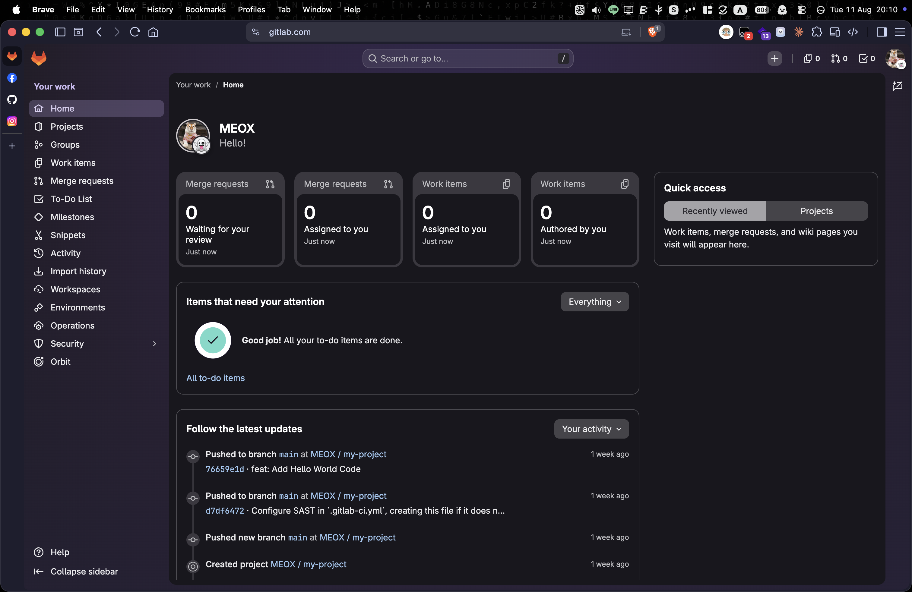
2) กด New project แล้วเลือก Create blank project
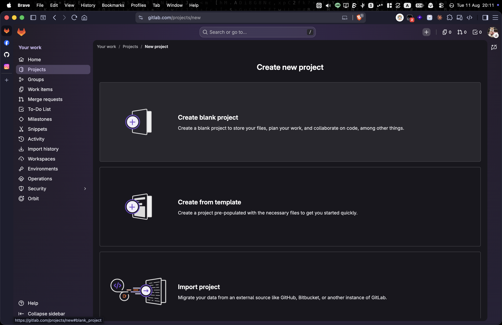
3) ตั้งชื่อ project ว่า head-project
4) เลือก Visibility Level ตามที่อาจารย์กำหนด (Public หากต้องการให้ทุกคนเข้าถึงได้)
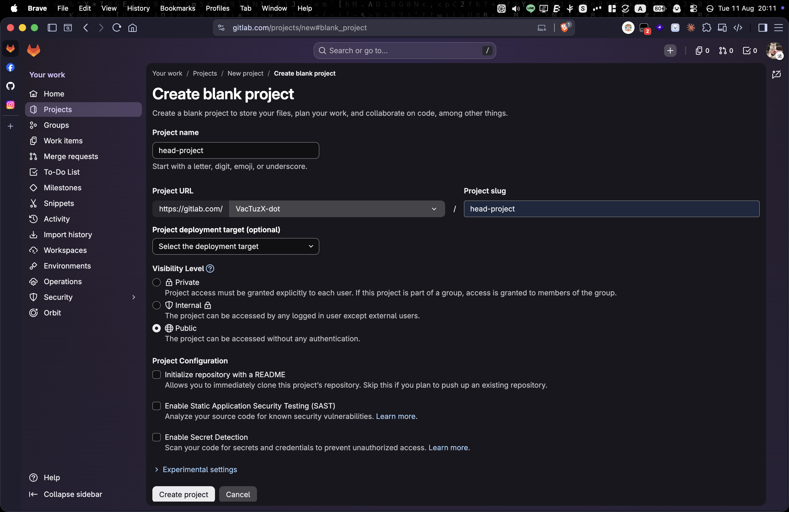
5) กด Create project
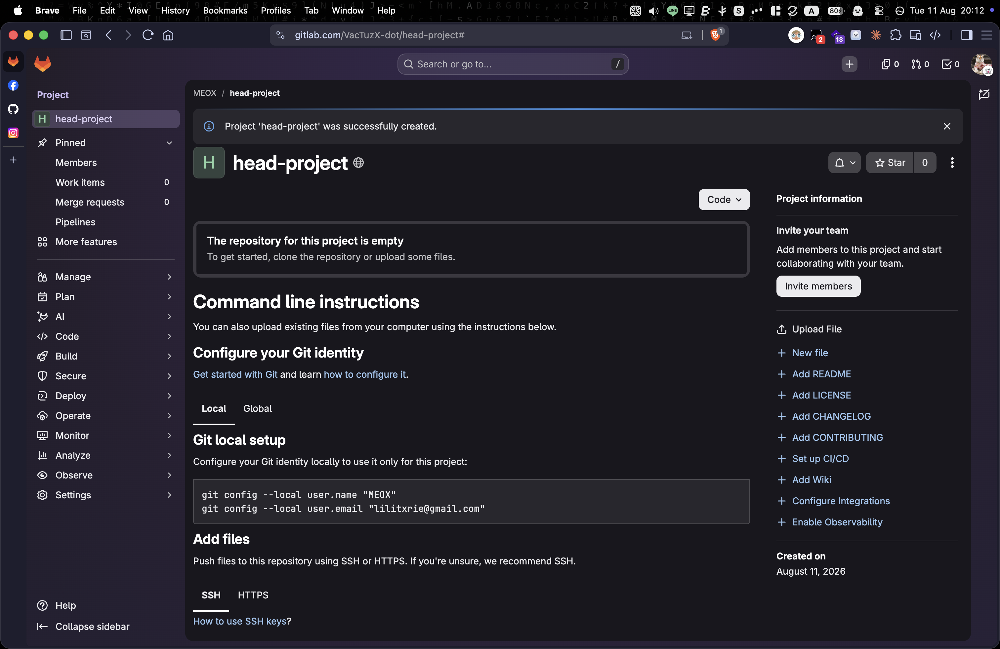
ต่อมาให้เรา cd เข้า folder ที่เราจะสร้าง project เพื่อ clone มาก่อน (เราจะใช้ SSH ในการ access)
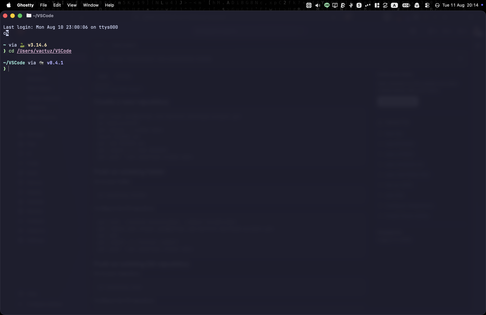
ssh-keygen -t ed25519 -C "your_email@example.com"example gmail เป็น gmail ที่เราได้สมัครกับ GitLab นะครับ มันต้องตรงกันถึงจะ access ได้เราต้องการ
id_ed25519.pub ซึ่งเป็น public key ที่ต้องนำไปเพิ่มไว้ที่ GitLab (Edit profile → SSH Keys → Add new key) ก่อน ถึงจะ clone/push ผ่าน SSH ได้โดยไม่ต้องกรอก password หรือ token ทุกครั้งที่ใช้งาน
เพิ่ม key เข้า GitLab
ไปที่ GitLab → คลิกรูปโปรไฟล์มุมขวาบน → Edit profile → SSH Keys → Add new key
วาง key นี้ทั้งบรรทัด แล้วกด Add key
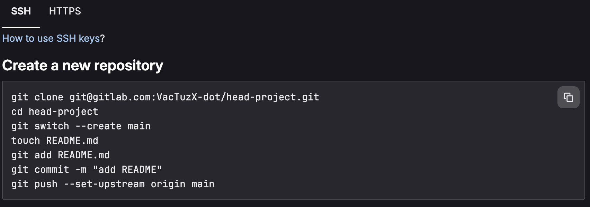
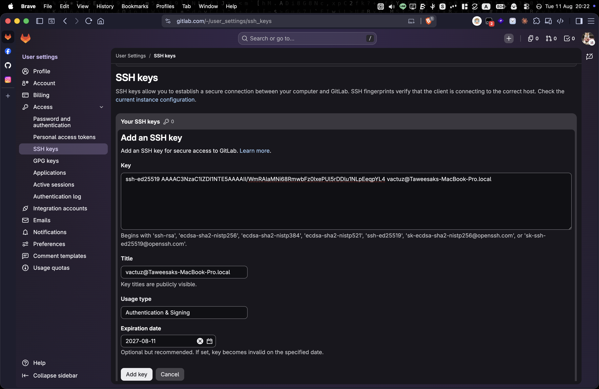
ใช้คำสั่งนี้ตรวจสอบว่าคุณเชื่อมกับ GitLab หรือยัง
ssh -T git@gitlab.comถ้าขึ้น Welcome to GitLab = ใช้ได้แล้ว
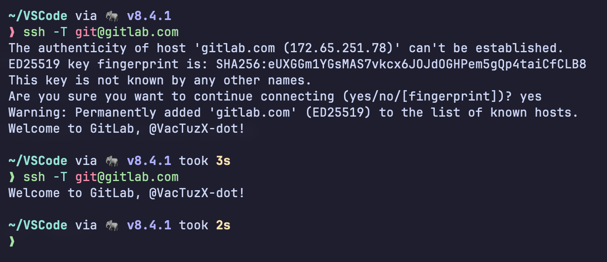
ใช้ URL แบบ SSH ตอน clone — จากหน้าจอที่ส่งมา ใช้บรรทัดใต้ SSH tab (ไม่ใช่ HTTPS)
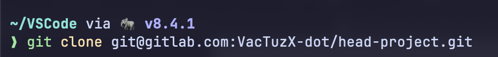
แล้ว cd เข้าไปยัง head-project ของเรา จากนั้นเปิด IDE
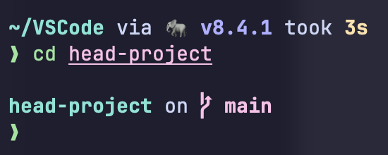
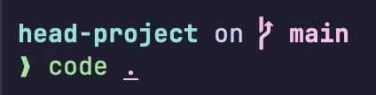
code .4วางโครงสร้างไฟล์
โครงสร้างไฟล์พื้นฐานของ head-project มีดังนี้
head-project/
├── index.html หน้ารวม nav link ของทุกคน
├── Dockerfile สร้าง image สำหรับ serve หน้าเว็บ
├── docker-compose.yml สั่งรัน container
├── .dockerignore กัน .git และไฟล์เอกสารหลุดเข้า image
└── .gitlab-ci.yml สำหรับ deploy อัตโนมัติ (ถ้าใช้ CI/CD)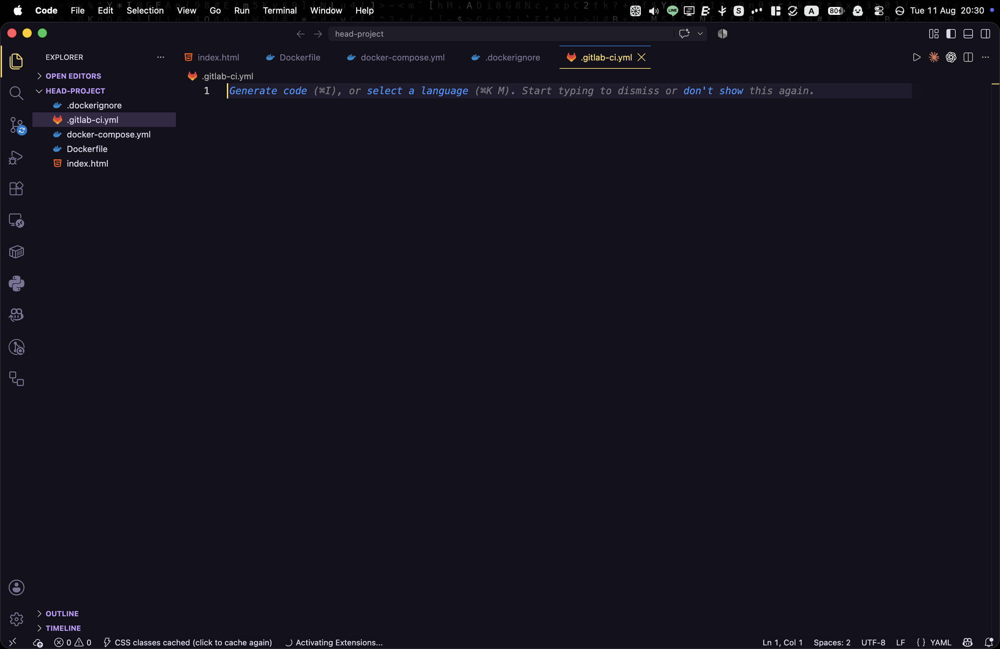
ดูไฟล์จริงทั้งหมดได้ที่ repo GitLab (public — เปิดดูได้เลยไม่ต้องขอสิทธิ์): gitlab.com/VacTuzX-dot/head-project
5เขียน Dockerfile
Dockerfile ใช้ nginx:alpine เป็น base image แล้ว copy ไฟล์ index.html เข้าไป serve เป็นหน้าเว็บ static
FROM nginx:alpine
COPY . /usr/share/nginx/html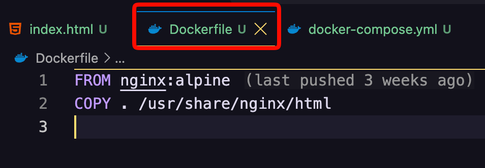
.dockerignore คู่กัน ระบุ .git, README.md และไฟล์เอกสารอื่นที่ไม่จำเป็นต้องอยู่ใน image ป้องกันไฟล์หลุดขึ้น production6ทดสอบ Local ก่อน deploy
รันคำสั่งต่อไปนี้บนเครื่องตัวเองก่อน push ขึ้น server จริง เพื่อเช็คว่า Dockerfile ถูกต้องตั้งแต่ต้นทาง
docker build -t head-project .
docker run --name head-project -p 8080:80 head-project--name head-project ด้วย — ไม่งั้น container จะได้ชื่อสุ่มจาก Docker (เช่น modest_newton) ซึ่งเป็นคนละชื่อกับ image ทำให้คำสั่ง docker stop head-project ด้านล่างหาไม่เจอ (image กับ container เป็นคนละ object กัน คนละชื่อกันได้ ถ้าไม่ระบุ --name ไว้)เปิดเบราว์เซอร์ไปที่ http://localhost:8080 ต้องเห็นหน้ารวม nav link แสดงผลถูกต้องก่อนค่อย deploy จริง
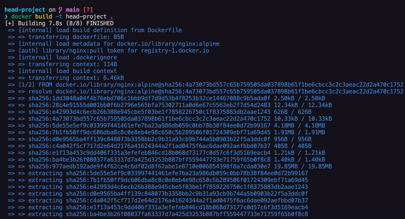
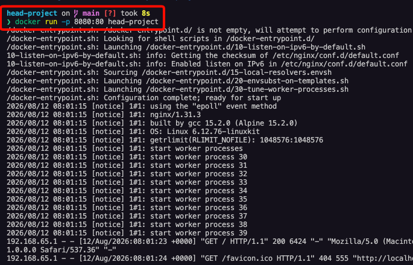
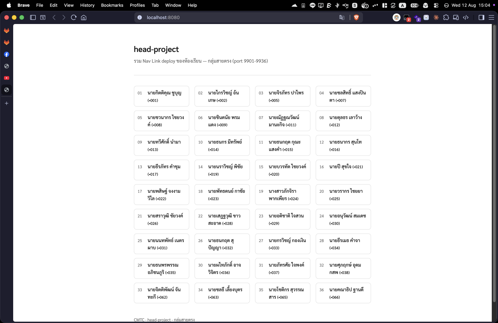
docker run -p 8080:80 head-project ด้านบนไม่ได้ใส่ -d จึงรันแบบ foreground — terminal ค้างรอ log อยู่ตลอด กด Ctrl + C เพื่อยกเลิก/หยุด container ได้ทันที (เท่ากับ interrupt process ที่กำลังรันอยู่)
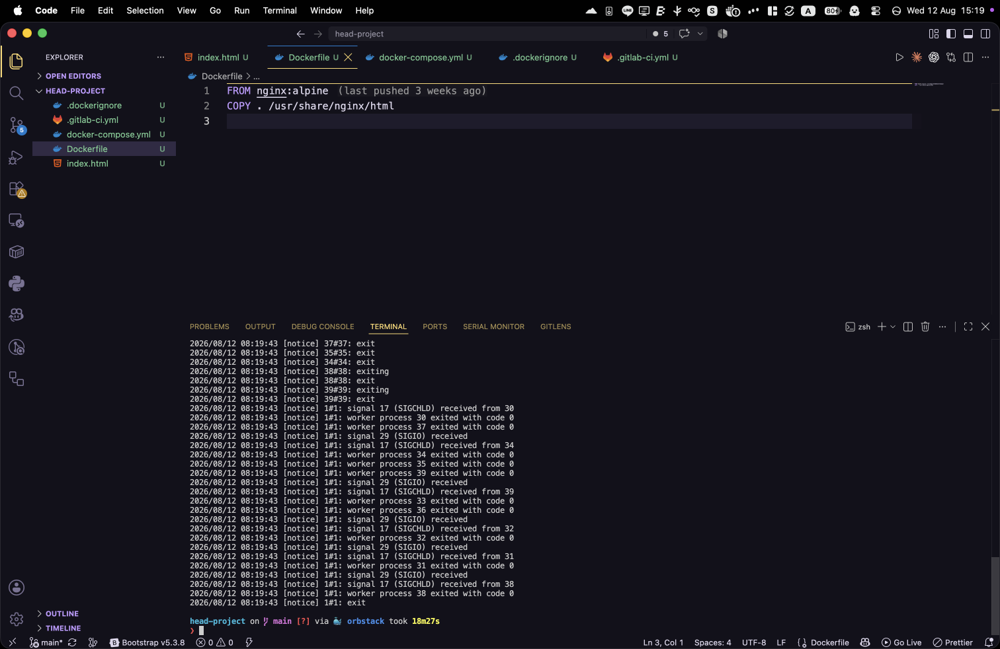
เก็บกวาดหลัง Ctrl+C (ไม่ให้ container/image ค้างเปลืองเครื่อง) — เปิด Docker Desktop → แท็บ Containers ก่อน เพื่อดูว่า container ID / name จริงคืออะไร
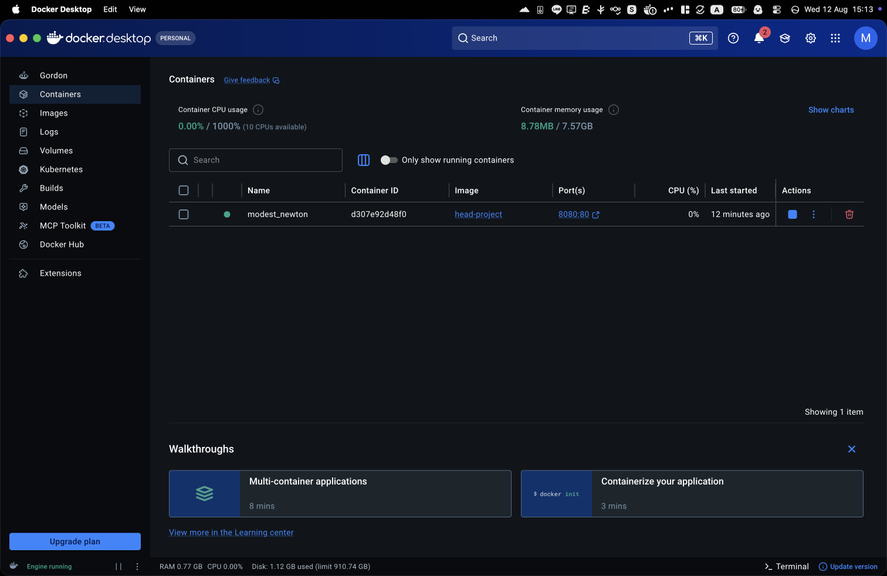
เอา name หรือ ID ที่เห็นมาลบ container ทาง terminal
docker rm head-projectระบุชื่อหลังคำสั่งได้ทั้ง name หรือ container ID ที่เห็นใน Docker Desktop
docker rm head-project ขึ้น No such container — แปลว่าตอน docker run ไม่ได้ใส่ --name head-project ไว้ container เลยชื่อสุ่ม (เช่น modest_newton) เอาชื่อที่เห็นในรูปด้านบนมาใช้แทนได้เลย เช่น docker rm modest_newtonลบ container เสร็จแล้ว ไปที่แท็บ Images ต่อ — image head-project จะยังค้างอยู่ (ลบ container ไม่ได้ลบ image ให้อัตโนมัติ)
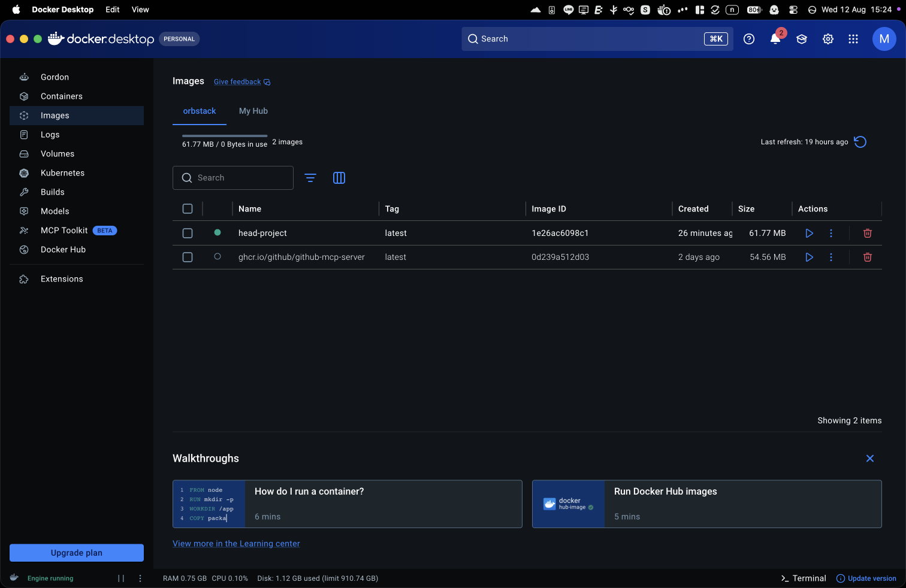
ลบ image ทิ้งด้วยคำสั่ง (หรือกดปุ่มถังขยะตรงแถว head-project ในรูปก็ได้ ไม่ต้องพิมพ์เลย)
docker rmi head-projectdocker rmi จะลบไม่ได้ ขึ้น error ว่า image ถูกใช้งานอยู่7Deploy ขึ้น server จริง
เลือกวิธี deploy ได้ 2 แบบ
- แบบที่ 1 CI/CD อัตโนมัติ — เขียน
.gitlab-ci.ymlให้ SSH เข้า server แล้วรันdocker compose up -d --buildทุกครั้งที่ push เข้า branch main - แบบที่ 2 Manual — SSH เข้า server เอง แล้ว
git pullตามด้วยdocker compose up -d --build
container_name ไม่ให้ชนกับของเพื่อนคนอื่นบน server เดียวกันถ้าใช้แบบที่ 1 (CI/CD อัตโนมัติ) ต้องตั้งค่า secret ให้ pipeline ก่อน push — ไปที่ Settings → CI/CD ในเมนูซ้าย
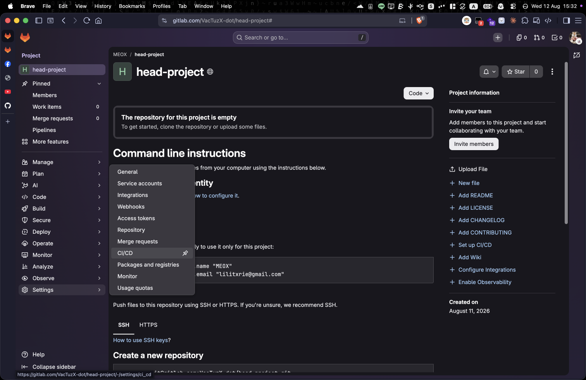
เพิ่ม variable 3 ตัว: SERVER_IP, SERVER_USER, SERVER_PASSWORD (ค่าเดียวกับที่ตั้งใน GitHub Secrets ของ repo หลัก)
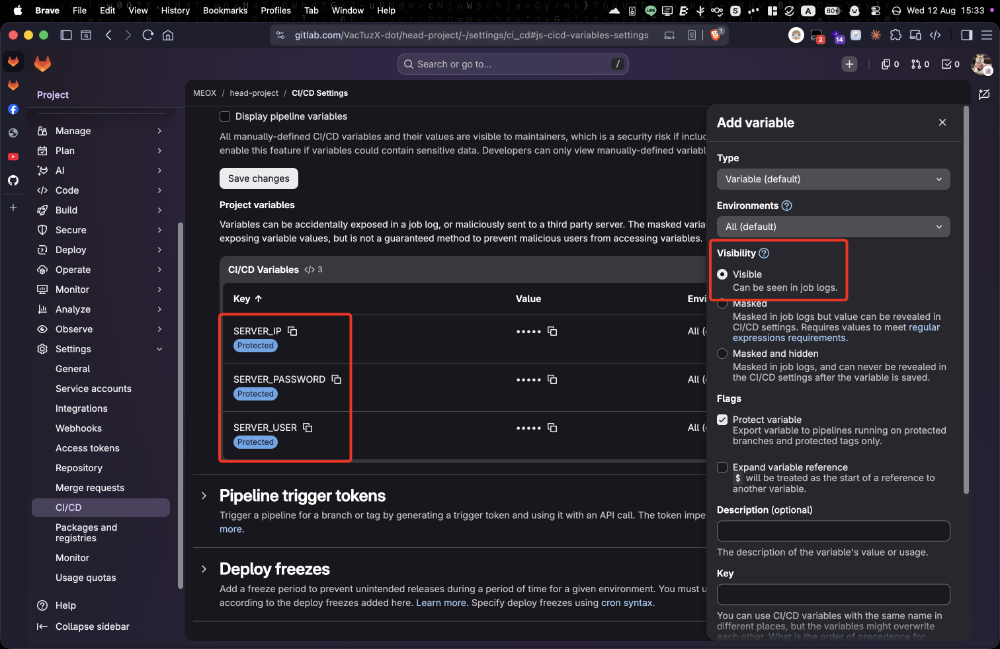
SERVER_PASSWORD ต้องเป็น Masked เท่านั้น — ถ้าเป็น Visible password จะโผล่เป็น plain text ใน job log ให้ใครก็ดูได้ ต้องกลับไปแก้ก่อน push จริง: เปิด variable นั้น → เปลี่ยน Visibility เป็น Masked → Savecommit + push จริง — เมื่อ push เข้า branch main สำเร็จ pipeline (ถ้าใช้แบบที่ 1) จะเริ่มรันเองทันที
git add .
git commit -m "feat: initial head-project setup (nav hub, Dockerfile, CI/CD)"
git push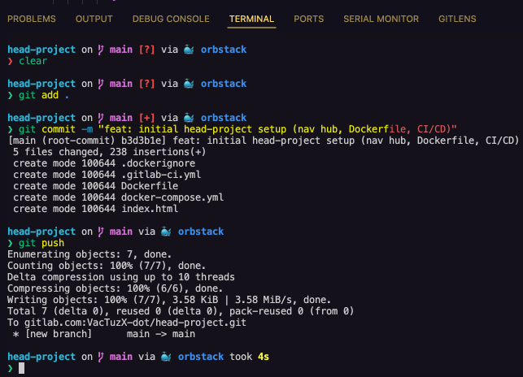
8ตรวจผลลัพธ์
docker psเพื่อเช็คว่า container รันอยู่สถานะ Up- เปิด
http://PUBLIC_IP:PORTทดสอบว่าหน้าเว็บขึ้นจริง - กด nav link แต่ละอันในหน้า head-project เช็คว่าลิงก์ไปหา port ของเพื่อนแต่ละคนถูกต้อง ไม่ error
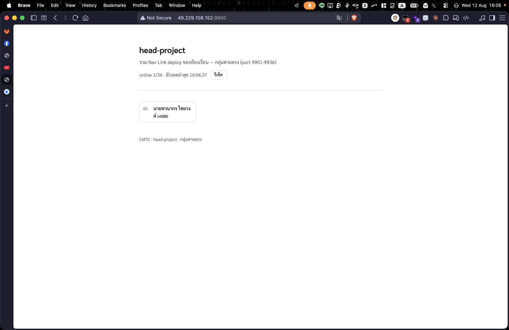
http://49.229.108.152:9900 — สถานะ "online 1/36" คือ nav ถูกเขียนให้เช็ค port แต่ละคนสด ๆ ด้วย fetch() แล้วโชว์เฉพาะคนที่ container รันอยู่จริง (คนอื่นยังไม่ deploy ก็ถูกกรองออกอัตโนมัติ ไม่ต้องไปลบ/แก้ list มือ)9ปัญหาที่มักเจอ และวิธีแก้
| อาการ | วิธีแก้ |
|---|---|
permission denied ขณะเชื่อมต่อ docker.sock |
user บน server ไม่ได้อยู่ใน docker group แก้ด้วย sudo usermod -aG docker <user> แล้วต้อง SSH เข้าใหม่จริงๆ เพราะ group ไม่ refresh ใน session เดิม |
| network ที่ระบุเป็น external แต่หาไม่เจอ | ต้องสร้าง network ก่อนด้วยคำสั่ง docker network create <ชื่อ> |
| เข้าเว็บผ่าน public IP ไม่ได้ | docker-compose.yml ไม่ได้ตั้งค่า ports ไว้ ต้องเพิ่มบรรทัด ports เพื่อ map port ออกมาให้เข้าถึงจากภายนอกได้ |
| container ชื่อซ้ำกับเพื่อน | ตั้ง container_name ให้ไม่ซ้ำกัน เช่นใช้เลขนักศึกษาต่อท้ายชื่อ container |
10ใช้ code ซ้ำสำหรับสาย/กลุ่มอื่น (เช่น ม.6)
repo head-project เป็น public บน GitLab — หัวกลุ่มสายอื่นเปิดดู/copy โค้ดได้เลยไม่ต้องขอสิทธิ์ ไม่ต้อง fork ก็ได้ (สร้าง repo ใหม่ของตัวเองแล้ว copy ไฟล์ 5 ไฟล์นี้ไปวางตรงๆ):
Dockerfile— เหมือนกันทุก track ไม่ต้องแก้.dockerignore— เหมือนกันทุก track ไม่ต้องแก้.gitlab-ci.yml— ไม่ต้องแก้ (deploy path derive จาก$CI_PROJECT_PATH_SLUGของ repo ตัวเองอัตโนมัติอยู่แล้ว ดู ขั้นตอน 7)docker-compose.yml— ต้องแก้ 2 จุด (ดูด้านล่าง)index.html— ต้องแก้ 3 จุด (ดูด้านล่าง)
ตัวอย่างจริง: สายตรง (9900) → ม.6 (hub 9940, นักเรียน 9941-9965)
docker-compose.yml — แก้ ports กับ container_name: container_name: head_project_m6_web
ports:
- "9940:80"เดิม container_name คือ head_project_direct_web และ ports คือ "9900:80" — ต้องแก้ให้ต่างจากของสายตรง กันชนกันบน server เดียวกัน
index.html — แก้ PORT_BASE, ข้อความ sub/footer, และแทนที่ทั้ง array STUDENTS ด้วยรายชื่อ 25 คนของสาย ม.6 (เริ่มนับที่คนที่ 41 ตามชีต port-assignments):const PORT_BASE = 9940;
const STUDENTS = [
["ชื่อ-สกุล คนที่ 1", "0XX"],
["ชื่อ-สกุล คนที่ 2", "0XX"],
// ... ใส่ให้ครบ 25 คน
];เดิม PORT_BASE คือ 9900 — port ของแต่ละคนคือ PORT_BASE + ลำดับ (คนแรก 9941 … คนที่ 25 = 9965) อีกจุดคือแก้ข้อความ sub เป็น "...(port 9941-9965)" และ footer เป็น "...กลุ่ม ม.6"
PORT_BASE — ถ้าลืม nav ทุกอันจะลิงก์ผิด port ไปชนกับของสายตรง ทั้งที่หน้าเว็บ deploy สำเร็จปกติ (ไม่มี error ให้เห็น เพราะเป็นแค่เลข port ผิด ไม่ใช่ code พัง)ที่เหลือทำตามขั้นตอน 3-8 ปกติ: สร้าง GitLab project ใหม่ของตัวเอง (public), เขียนไฟล์ตามด้านบน, test local, ตั้ง CI/CD Variables 3 ตัว (SERVER_IP/SERVER_USER/SERVER_PASSWORD แบบ Masked — ค่าเดียวกับของสายตรงถ้าใช้ server เดียวกัน), แล้ว push
11ทิปสำหรับอาจารย์นำไปสอนต่อ
- กำหนด port ให้แต่ละคนล่วงหน้าเป็นสูตรตายตัว เช่น 9900 บวกเลขนักศึกษา แทนการให้นักศึกษาหา port ว่างเอง ป้องกันการชนกันตอน deploy พร้อมกันทั้งห้อง
- ใช้ git commit history เป็นหลักฐานลำดับขั้นตอนการทำงานของนักศึกษาแต่ละคนได้ ไม่ต้องให้เขียนรายงานแยกต่างหาก
- จุดที่ควรเน้นตอนสอน คือการใช้
.dockerignoreป้องกันไฟล์หลุดขึ้น production และการแยก CI/CD job เป็น build/test/deploy เพื่อให้ pipeline fail fast เมื่อมีข้อผิดพลาด